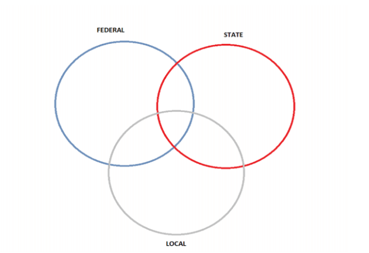
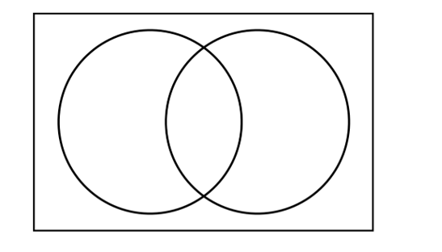
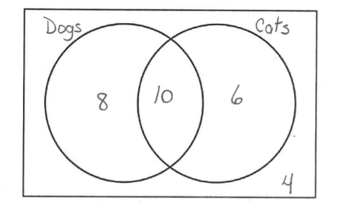
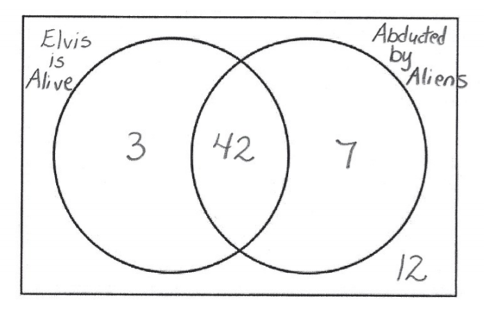

Linear Modeling and Logic Unit
4.8 Venn Diagrams
Government: Who Takes Care of What?
- Federal, State, and Local governments each have responsibilities for services to citizens. Sometimes these responsibilities overlap.
Use a Venn Diagram to illustrate which government(s) is responsible for each of the following.
- Safe Travels: The Federal Aviation Administration (FAA) ensures that flying is safe.
- How Green it is! National and state governments create and maintain about 300 million acres of parks and forests.
- Road Trip! About 4 million miles of roads criss-cross the country.
- Behind the Wheel: Every state has a Department of Motor Vehicles.
- Quick, call 9-1-1: Your communities first responders-firefighters, police, and EMTs-are there in minutes.
- Vote! The Constitution establishes how national elections are held. Local governments, with State oversite, arrange for polling places where people cast their votes.
- How Much? The U.S. mint manufactures and distributes the coins we use. The Bureau of Engraving and Printing prints our paper money.
- P-U! That’s what you might say without garbage collection provided by your community’s sanitation department.
- Electing our President: Every state chooses electors for the Electoral College. Electors cast votes for whichever candidate gets the majority of votes in the state.
- Ensuring National Security: The Department of Defense provides the military forces needed to prevent war and keep our country safe.
- Correctional Facilities: Prisons—house people who have been convicted of a crime.
- Getting Well: A state controls all the hospitals within its borders and exerts direct control over specific facilities.
- Read, Play, Enjoy: If you like libraries, sports fields, parks, and other recreation facilities in your community, say thank-you to your local government.
- Go fish! But first you will need a state-issued license. The same goes for hunting.
- Protecting Plants and Animals: U.S. Fish and Wildlife focuses on protecting endangered species.
- Your teachers, your schools: Local communities hire teachers, build schools, and provide transportation to and from school. What gets taught is the state’s responsibility.
- To Your Health! The Food and Drug Administration (FDA) approves all medicine and sets food safety standards.
- Ratify! Any amendment to our Constitution must be approved, or ratified, by 38 states.
- Electricity, natural gas, and water are necessities to be managed and distributed. Local communities are in charge.
- Bumpety-bump! Without your local government to repair the roads and fix potholes, you may end up with a rough ride.
- Tests to Pass! Lawyers and other professionals must pass a state licensing exam in the state where they plan to work.
- Learning more on your behalf: The National Institute of Health (NIH) supports research into the causes and cures of diseases.
- Safe and Sound. Community police, state troopers, the National Guard, and the FBI (Federal Bureau of Investigation) work to fight crime
- According to the Venn diagram, how many responsibilities does the federal government have?
11
- How many responsibilities are solely in the hands of the state governments?
6
- How many responsibilities are shared by at least 2 levels of government?
6
- How many responsibilities do local governments have that they share with other levels of government?
4
- How many responsibilities do local governments have?
9
- How many responsibilities are shared by federal and local governments?
3
- How many responsibilities are only fulfilled by one level of government?
17

- How many students are in Mrs. Mac’s kindergarten class?
25
- How many students in the class can already read?
13
- How many right-handed students are in the class?
17
- How many students can both read and count to 100?
5
- How many students can read or count to 100?
16
- Describe in words the empty region.
Left-handed students in Mrs. Mac's class who can count to 100 but cannot read.
-
Draw a Venn Diagram to represent the following information.
A class of 28 students were surveyed and asked if they ever had dogs or cats for pets at home.
8 students said they had only ever had a dog.
6 students said they had only ever had a cat.
10 students said they had a dog and a cat.
4 students said they had never had a dog or a cat.

-
Draw a Venn Diagram to represent the following information and answer the questions.
A survey of 64 informed voters revealed the following information:
45 believe that Elvis is still alive
49 believe that they have been abducted by space aliens
42 believe both of these things
- How many believe neither of these things?
12
- How many believe Elvis is still alive but don't believe that they have been abducted by space aliens?
9

- How many believe neither of these things?
- Draw a Venn Diagram to represent the following information and answer the questions.
A survey of used car salesmen revealed the following information:
24 wear white patent-leather shoes
28 wear plaid trousers
20 wear both of these things
2 wear neither of these things
- How many were surveyed?
34
- How many wear plaid trousers but don't wear white patent-leather shoes?
8
![A Venn Diagram enclosed in a rectangle that represents the universal set and contains 2 intersecting circles. One circle represents Wear White Patent-Leather shoes and one represents Wear Plaid Trousers. There are numbers that represent the number of people in each section of the diagram. The number 4 is in Wear White Patent-leather shoes only, the number 8 is in Wear Plaid trousers only and the number 20 is in intersection of cats and dogs. The number 2 is outside the circles and inside the rectangle.](images/u4s8p17k.png)
- How many were surveyed?
-
Draw a Venn Diagram to represent the following information.
A Class of 40 students completed a survey on what pets they like.
Everyone liked at least one pet.
10 students liked Cats and Birds but not dogs
6 students liked Cats and Dogs but not birds
2 students liked Dogs and Birds but not Cats
2 students liked all three pets
10 students liked Cats only
9 students liked Dogs only
1 student liked Birds only

![A Venn Diagram enclosed in a rectangle that represents the universal set and contains 3 intersecting circles. One circle represents Likes Dogs, one represents Likes Cats and one represents Likes Birds. There are numbers that represent the number of students in each section of the diagram. The number 9 is in dogs only, the number 10 is in cats only and the number 1 is in birds only. The number 6 is in the intersection of dogs and cats. The number 10 is in the intersection of cats and birds. The number 2 is in the intersection of dogs and birds. The number 2 is in the intersection of all three circles.](images/u4s8p18k.png)
-
Draw a Venn Diagram to represent the following information and answer the questions.
A survey of faculty and graduate students at the University of Florida's film school revealed the following information:
51 admire Moe
49 admire Larry
60 admire Curly
34 admire Moe and Larry
32 admire Larry and Curly
36 admire Moe and Curly
24 admire all three of the Stooges
1 admires none of the Three Stooges
- How many people were surveyed
83
- How many admire Curly, but not Larry nor Moe?
16
- How many admire Larry or Curly?
77
- How many admire Larry and Curly?
32
- How many admire Moe or Curly?
75
![A Venn Diagram enclosed in a rectangle that represents the universal set and contains 3 intersecting circles. One circle represents Admires Moe, one represents Admires Larry and one represents Admires Curly. There are numbers that represent the number of people in each section of the diagram. The number 5 is in Admires Moe only, the number 7 is in Admires Larry only and the number 16 is in Admires Curly only. The number 10 is in the intersection of Moe and Larry. The number 12 is in the intersection of Moe and Curly. The number 8 is in the intersection ofLarry and Curly. The number 24 is in the intersection of all three circles and the number 21 is outside all three circles and inside the rectangle.](images/u4s8p19k.png)
- How many people were surveyed
![A Venn diagram with three intersecting circles showing which government is responsible for various functions. The top left circle is labeled federal. The top right circle is labeled state, and the bottom circle is labeled local. Federal circle includes A, G, J, O Q v. State circle includes D, I L, N, R, U. The local circle contains E, H, M, S, T. C and W are in the intersection of all three circles. B & K are in the intersection of Federal and State. F is in the intersection of Federal and Local. P is in the intersection of State and Local.](images/u4s8p7k.png)
![A Venn diagram of Mrs. Mac's kindergarten class. There are three intersectings circles in the diagram. The circle on the top left is labeled can read. The circle on the top right is labeled left-handed. The circle on the bottom is labeled can count to 100. The intersection of all three circles has a 1 in it. The intersection of the can count to 100 and left-handed is empty. The intersection of can count to 100 and can read is 4, and the intersection of can read and left-handed is 2. The can read area with no intersection with the other circles is 6, left-handed 5, and can count to 100 3. There are 4 students outside all the circles.](images/u4s8p1.png)